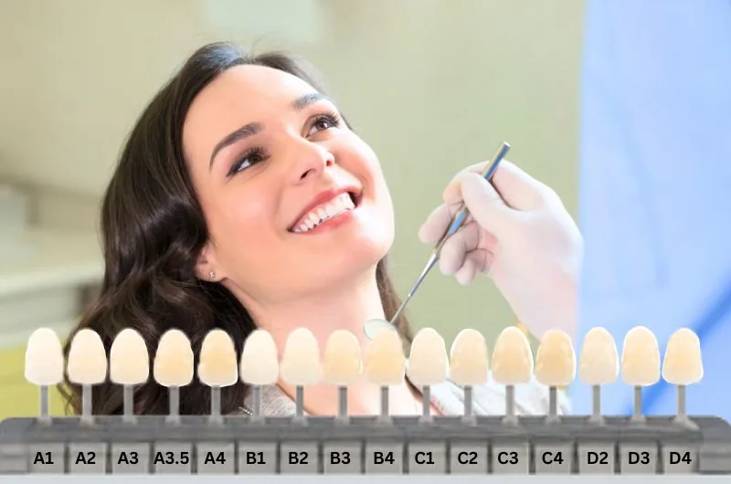
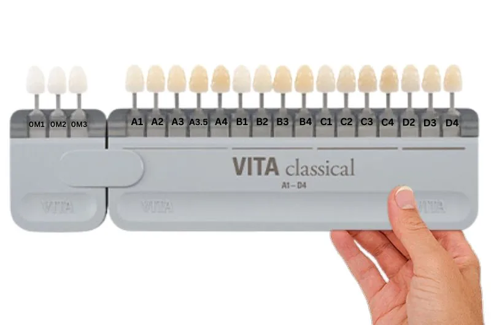

Selecting the proper tooth shade is just like choosing a color of paint for their house; it is what makes a person feel comfortable. Knowing about tooth shades assists to give you the smile you've always wanted. From the ones that are a little off-white and almost similar to your teeth color to the ones that are white and prominent, there exists a perfect tooth shades match. Now, we are going to variations of tooth shades for the best result and shiny smile.
What affects the choice of tooth shade?
Selecting the right tooth shade is more of a game and several factors assist one to arrive at the right shade. What is the best tooth shade? We are giving info.
Skin tone
This is very important factor when choosing the right tooth shade. The lighter complexion requires more delicate and pastel white, while the warmer skin tone suits the more saturated white.
Natural tooth color
Observe the color of the teeth that you currently have. If you are undergoing treatment of a few teeth, then you will need to choose a color that will complement the rest of your teeth.
Lighting conditions
Obviously, tooth shade depends on the light in which it is viewed. Make sure that the shade looks good under artificial as well as normal lighting conditions to understand how good it looks.
Age
Normal aging of the human body causes the teeth to darken. One patient maybe a young one will prefer a bright color while another patient may need a natural appearing color that is associated with elder persons.
Personal preference
How flashy or subtile do you need your smile to be? It boils down to personal preference of style and what you would want your teeth to portray regarding that style.
Dental material
The kind of material that has been used (for example porcelain, zirconia) affects the final shade of the material. Depending on the material, light is reflected differently, this has to be taken into account.
Cultural and social preferences
Some people like their teeth very white and shiny while others, especially in some parts of the world, prefer their teeth to be naturally colored. Use what seems to be right in the social environment that you are in.
Understanding tooth shade categories
When it comes to achieving a perfect smile, there are some basic nuances that one has to know concerning the classification of tooth shades. Teeth color is one of the most important components of your smile design, and choosing the right color of the teeth will make a huge difference to the naturalness and attractiveness of the smile. Currently, the VITA scale is the most commonly used system for classification of the tooth color - it is a universal system that can assist both the patient and the dentist in choosing the right color for the restoration.
Tooth shade categories: the VITA shade chart explained

The VITA scale as tooth shade guide organizes tooth shades into four primary categories: A, B, C, and D are the different categories of shades that are available for matching with a patient's natural tooth color since the different categories consist of different hues and saturation.
A (Reddish-Brown): Shades in this category include those which are reddish - brown in hue since the natural teeth colour characteristic of this category are warmer and close to nature. (A1, A2, A3, A3.5, A4)
B (Reddish-Yellow): B shades are slightly reddish-yellow and are quite popular, with the B1 being one of the most popular; they provide warmth that is regarded as natural and bright. (B1, B2, B3, B4)
C (Grey): C shades also include grey hues, so it will be suitable for people with a cooler tone of teeth by their nature. (C1, C2, C3, C4)
D (Reddish-Grey): The D category is the combination of red and grey, this results into a number of special shades that is relevant to less frequent tooth colorations. (D1, D2, D3)
Common tooth shades
A1 tooth shade
Being a member of the A group, A1 is a light shade of tooth that is very close to natural tooth color. It is slightly reddish-brown which means it is preferred by patients who wish to have their skin color changed just a bit. It can therefore be concluded that the A1 tooth shade is most appropriate for those people who desire to have a brighter shade of the teeth color, which is however natural.
A2 tooth shade
A2 is a shade a little darker than the A1 but still belongs to the light shades. A2 tooth shade is warm, slightly reddish-brown shade, which provides a very natural appearance to the material and most patients' teeth. This color is perfect for clients who desire a discreet improvement of their hair color without the intensity that accompanies lighter colors like A1.
A3 tooth shade
Proceeding to the next level of the A3, it provides a deeper reddish-brown color that is more saturated. Most people use A3 tooth shade for dental restorations and those with dark teeth or those who want to match their current dental work. The A3 tooth shade is suitable for people who do not want a dazzling white, but a rather natural look.
B1 tooth shade
The B1 tooth shade is acknowledged as one of the brightest and most popular ones. It belongs to the B category and part of it has yellowish tint. B1 tooth shade is one of the lighter shades that are natural that is why many patients want to get B1 tooth shade to obtain a brighter smile. It is particularly ideal for people who desire to have improved appearance of the teeth without the use of braces.
What is B1 tooth shade and why is it so popular?
The B1 is the most recommended tooth shade for anyone who wants to get the perfect shade of white and lively smile. It falls on the VITA scale as one of the lightest shades, and is thus best suited for use where the user wants their teeth to look white but not bleached. B1 tooth shade suits the skin of most people and makes them appear fresh and young, yet it is not very dramatic in its effect. From veneers to crowns, to teeth whitening, the B1 tooth shade is one of the most preferred recommendations that the dentists provide due to its natural appearance and brightness.
Is B1 tooth shade too white?
B1 tooth shade is one of the brightest shade in the natural tooth color range but it is not 'too white' in nature; it is meant to depict a natural white look and feel; though it is significantly whiter than the normal natural tooth shades such as A2 or A3, it does not look artificial or bleached.
B1 cannot be said to be the whitest of the whites; this is because there is a series of even brighter bleaching versions that are used for purpose of extreme brightness. In the natural range of tooth shades, B1 is relatively white, but it has been developed in a way that will still brighten people's smiles without it looking as if their teeth have been whitened. This makes it a preferred choice of any person who wants to get the best white color that looks natural on the teeth.
B1 vs. hollywood white: which tooth shade is better?
B1 tooth shade and Hollywood white each perform a different function in terms of the aesthetic. B1 is recognized as a natural white shade and is recommended for those clients who would wish to have a whiter smile than their current one but without it being excessively so. However, Hollywood white relates to the bright white color that approaches the white of the neon and is typically brighter than the normal teeth color. If a person desires a not too striking but nevertheless subtle change, then B1 is more suitable, while Hollywood white is for a person who wants a look that is similar to what celebrities have.
What tooth shade is considered Hollywood white?
Essentially, the term “Hollywood white,” usually describes a shade of teeth that is extremely white and shiny, which is usually acquired from a dental cosmetic procedure. In the present day, B1 tooth shade is acknowledged as the reference point to acquire a Hollywood smile since it is the lightest and most vivid tooth shade. Still, some people go for even whiter shades than B1 by using veneers or bleaching procedures that are beyond the normal tooth shades. These extremely white tones are popular among movie stars and people who want to attract attention to the smile. Your dentist will advise you on the best shade that will give you that stand out Hollywood glow.
How to match your tooth shade with dental crowns or veneers
In matching your tooth shade to dental crowns or veneers, the critical aspect to pay attention to is compatibility of the new prosthesis with the rest of the teeth. Your dentist will normally use a chart with shades of color to determine a shade that resembles your natural teeth. They will think of how the shade will appear during the day and at night and whether it blends well with your facial structure. The material of the crowns or veneers also has a large bearing, this is because it determines the appearance of the shade once on the teeth Thus, it becomes easy for your crowns or veneers to match the natural color and material of the teeth providing you with the best smile.
Common myths about B1 tooth shade
One myth is that it is hard to maintain B1. No, if proper oral cleaning is employed, it lasts for several years. Some people also think that B1 is ideal for veneers or crowns alone. But it is also perfect for the natural teeth through the whitening process. There is a myth that B1 does not match all types of skin, but it is proved that this hue suits almost any female skin type if chosen correctly. Moreover, it is a widespread misconception that B1 is applicable solely to the young population, while in fact, the procedure can fit people of any age interested in teeth whitening.